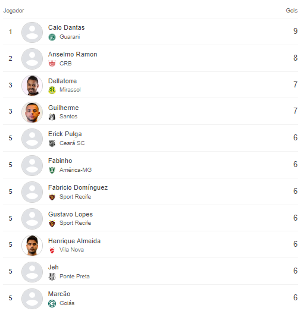

ARTILHARIA: CAIO DANTAS
Caio Dantas, com sua habilidade de fazer gols, movimentação inteligente e força para disputar as jogadas, é um dos jogadores que têm se destacado na Série B do Campeonato Brasileiro de 2024.
Seu estilo de jogo, que mistura técnica e potência física, o torna uma referência no ataque e um jogador difícil de ser parado pelos adversários.
Não importa em que posição sua equipe termine no campeonato, Dantas é, sem dúvida, um dos atacantes que merece atenção nesta temporada, com grande capacidade de decidir partidas importantes.
